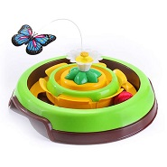

| Bolinha Recheável |
|---|
| R$ 17,00 |
A Bolinha Recheável Macaquinho Pet Games proporciona um bem-estar físico e mental permitindo o comportamento exploratório de roer e procurar alimentos.
Para cães que adoram caçar: jogue o macaquinho no chão para seu cão persegui-lo e caçá-lo. Os movimentos irregulares deixarão o cão enlouquecido pela presa.
Para cães que adoram comer: coloque grãos de ração ou petiscos com formato palito no compartimento e ofereça para o cão se deliciar.
Essas duas maneiras de brincar proporcionarão grandes períodos de interação, distração e exercícios.
| Petball |
|---|
| R$ 27,00 |
As brincadeiras são parte super importante na rotina dos nossos amigos de quatro patas. Além de serem muito divertidas, elas contribuem para um desenvolvimento saudável e feliz. Por isso, vale a pena conhecer o Petball, um brinquedinho incrível que deixará os momentos de descontração do seu cãozinho ainda melhores!
- Indicado para cães;
- É uma forma divertida e saudável de estimular o seu pet;
- A brincadeira é mais proveitosa quando seu cão estiver com fome;
- É atóxico, lavável e super resistente;
- Disponível em quatro tamanhos PP, P e M.
| Truqys Pets Cat |
|---|
|  |
| R$ 60,00 |
Elaborado com cores atrativas, estrutura e movimentação que atiçam a curiosidade do gato, o Brinquedo Truqys Pets Cat Spin Verde possui uma proposta simples de caçada, proporcionando ao seu pet diversão, além de exercitar o corpo, a mente e o instinto.
- Estimula o instinto de caça;
- Ajuda a diminuir o stress e a ansiedade;
- Exercita seu gato com diversão;
- Alimentado por bateria AAA;
- Brinquedo 2 em 1: pista com bolinha e caça a borboleta.